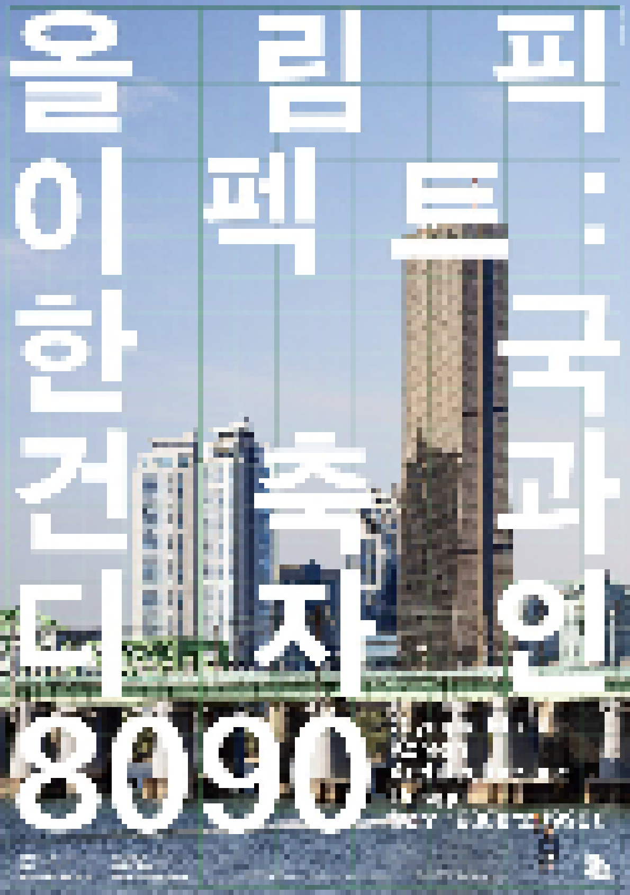

> title
올림픽 이펙트: 한국 건축과 디자인 8090
> content
국립현대미술관은 2010년 이후 한국 건축과 디자인사 구축을 위한 다양한 프로그램을 기획해왔다. 이에 맞춰 《올림픽 이펙트: 한국 건축과 디자인 8090》전은 1980년대에서 1990년대 사이
급격히 성장한 한국의
시각·물질문화의 기반을 재조명하는 전시로 기획되었다. 전시는 특히 1988년 서울올림픽 개최를 계기로 만들어진 여러 층위의 건축적 사건과 디자인 사물을 올림픽 여파(Olympic
Effect)라는 키워드로
재조명한다. 88서울올림픽은 우리 사회 전반에 큰 영향을 미친 국제 행사로 기록된다. 하지만 이번 전시는 올림픽 자체보다 올림픽에 대응하는 중첩된 면모들을 살펴본다. 올림픽이 촉발했거나 혹은
역설적으로 올림픽에 의해
납작해진 도시, 환경, 건축, 사물, 이미지 등을 펼쳐본다.
올림픽 유산은 물리적으로 수치화 될 수 없는 다양한 형식으로 우리 일상에 자리하고 있다. 전시장의 아카이브는 당대 시각문화, 물질문화, 인공물들이 누구에 의해 어떻게, 생산, 수용되었는지 과정을
살피는 매개가 된다.
특히 1980년대부터 1990년대 사회 변화 속에서 디자이너와 건축가들의 계획과 설계 과정을 들여다본다. 또한 이러한 아카이브를 토대로 전시 주제를 재해석한 작가들의 커미션 작업이 함께
선보인다.
2020년 개최 예정이었던 도쿄올림픽 등 국제 행사들은 코로나-19로 위기에 직면하고 있다. 막대한 개최 비용, 대규모
개발로 인한 환경파괴와 사회적 배제 등이 올림픽의 그림자로 공존했다.
하지만 이번 전시는
한국적인 것과 세계적인 것, 옛 것과 새 것, 사라진 것과 남은 것 사이에서 고민했던 이분법적인 문제의식을 넘어 현재를 이해하고 기술하기 위한 조건들을 탐색해보고자 한다. 이번 전시를 통해
올림픽이라는 사건 전후에
놓인 한국 현대 건축과 디자인 실천들을 다층적으로 바라보기를 권한다.
프롤로그
진달래&박우혁의 <마스터플랜: 화합과 전진>은 88서울올림픽 전후 사회와 문화를 아우르는 이미지와 건축ㆍ디자인의 패턴을 중첩하고 반복해, 시간, 운동, 소리, 구조가 결합된 가상의 무대를
중앙홀에 연출한다.
건축ㆍ디자인의 시각적, 구조적 질서와 각종 경기장의 규격은 선과 단위가 교차하며 특정 공간을 형성하는 공통점이 있다. 비체계와 체계, 아날로그와 디지털, 평면과 입체, 정면과 측면이
중첩되는 장면은 그 시대를
통해 현재 사회를 돌아보는 계기를 마련한다.
1부 올림픽 이펙트
1부 ‘올림픽 이펙트’에서는 전시 주제를 환기시키는 도입부로 88서울올림픽을 위해 고안된 사물과 공간, 사건을 ‘계획’과 ‘잔상’의 관점으로 불러온다. 전시는 올림픽 주역을
소개하기보다 먼저 그것의 계획
과정을 살펴본다. 스펙터클한 장면으로 휘발된 올림픽 개·폐회식이 어떤 과정을 통해 고안되었는지 당시 서울올림픽 미술감독이었던 화가 이만익의 아카이브 자료를 통해 엿본다. 이만익
아카이브에는 한국적 정서와
아름다움을 색채계획, 공연의상, 무대장치 등 총체 예술 프로그램으로 전 세계에 보여주고자 했던 당시 고민이 담겨 있다.
다음으로 올림픽이 남긴 잔상을 여러 매체와 시점으로 살펴본다. 백남준의 <다다익선>과 김수근의 <88서울올림픽 주경기장> 모형은 올림픽을 계기로 탄생한 예술과 건축의 기념비를 상징한다.
전 세계 올림픽 개최
도시들을 기록해온 다큐멘터리 감독 게리 허스트윗의 <올림픽 시티>는 올림픽의 유산과 일상의 공존을 포착한다. 88서울올림픽 30주년을 기념하여 제작된 KBS 다큐멘터리
88/18은 올림픽 체제와
지금 사회의 복합적 연결 고리를 보여준다.
2부 디자이너, 조직, 프로세스
2부 ‘디자이너, 조직, 프로세스’에서는 88서울올림픽 전후 디자이너, 건축가들의 사회적 위상과 규모 변화에 따른 조직과 시스템의 재구축 현상 등을 다룬다.
창작 주체지만 공동 결과물을
만드는 협업 과정에서 독립하기 어려운 그들의 활동이 산업적 풍요 위에서 어떻게 전개되었는지 살펴본다.
디자인이 곧 미래이자 기술, 혁명이었던 당시 삼성과 금성, KBS, 정림건축을 비롯한 대형 조직에서 디자이너/건축가로 성장했던 이들의 인터뷰와 관련 자료가 전시된다.
한편으로 올림픽
이면에 가려져 확장되지 못한 시각 문화의 현장을 목도했던 디자이너의 목소리도 담는다. 선우훈의 디지털 드로잉 <캐릭터라이즈드>는 인터뷰 내용을 작업의 출발점으로 삼아
디자이너를 작품의
화자로 내세운다. 전시장에는 디자인 과정을 엿볼 수 있는 공간으로 디자인 개발실을 연출했다. 개발실에는 사보, 잡지, 청사진, 다이어그램 등 당대 작업 과정
전반에 사용된 시각물이
선보인다.
3부 시선과 입면
3부 ‘시선과 입면’에서는 올림픽이 야기한 물적 토대를 기반으로 구축된 새로운 유형의 건축물과 도시 풍경을 조명한다. 테헤란로, 을지로 2가 등
88서울올림픽 가시권을 대상으로
촬영한 최용준의 건축 사진은 88서울올림픽 전후 폭발적으로 생긴 고층빌딩이 만든 매끈한 도시 표면을 담는다. 오피스 빌딩, 주거시설, 인프라, 문화 시설을
주제로 세운 전시장의
구조물 뒤로 해당 대상들을 고안한 디자이너와 건축가들이 남긴 아카이브 자료들이 배치된다.
또한 1980년대 올림픽의 열기가 미묘하게 분열된 서울의 모습을 담은 구본창의 <긴 오후의 미행>, <시선 1980> 시리즈는 국가 프로젝트의 틈새와 간극을
포착한다. 서울과학사의
<디오라마 서울>과 모형 제작사 기흥성 뮤지엄의 건축 모형은 올림픽 유산이 된 여러 인공물들을 모형으로 선보인다. 30여년 시차를 두고 사진과
모형이라는 매체로
포착한 올림픽 유산들은 서로 간섭하고 교차하며 이야기를 이끈다.
4부 도구와 기술
1980년대 한국사회의 산업화, 세계화를 향한 염원은 기술발전을 통해 실질적인 성과를 드러냈다. 올림픽을 계기로 한국은 고도 산업
시대에 안착했고 컴퓨터와
웹의 보급을 통해 정보화 사회로 진입하였다. 대형 오피스 빌딩은 도시 풍경은 물론 업무 환경과 일의 방식을 변화시켰다. 컴퓨터, 팩스,
복사기 등 최신 사무용
기기들을 체계적으로 배치하고 사용해 업무 효율을 늘리는 사무자동화는 대형 제도판이 종횡을 맞춰 도열했던 사무실 풍경을 바꿔놓았다. 자와
컴퍼스 등 건축가와
디자이너가 자신의 계획을 시각화하기 위해 사용한 설계 도구들은 컴퓨터와 CAD 프로그램 도입으로 매끈한 스크린 안에 압축되었다. 권민호의
<일하는 손>은 도면
위에서 고유한 몸짓으로 공간과 사물을 상상하던 작업대를 무대로 재현한다. 텍스처 온 텍스처의 <계획하는 도구>는 1980년대
설계도구들의 잊힌 구실과
작용을 상기시킨다.
에필로그
다이아거날 써츠(김사라)의 <2 0 2 0 1 9 8 1 : 장면의 뒤편>은 88서울올림픽이 사회 기반 시설과
건축, 예술, 디자인 등 일상에
남긴 자취를 쫓는 실험 영상이다. 작업은 전시장에 놓인 작품과 자료의 시각적 모티브를 중심으로 맥락과 시공간을
해체하여 전시 공간을
재구성한다. 모니터 공간에서 재구성된 경험을 통해 상상 속에 있을 법한 «올림픽 이펙트»의 시공간의 세계로
안내한다.
온라인
서울스테이지는 포스트-올림픽 세대 도시기록가들의 콜렉티브로 전시 기간 동안 88서울올림픽이 남긴 흔적들을
수집한다. 온라인
계정(인스타그램 @seoulstage)에서 활동하는 이들의 작업은 지도, 지하, 지상 등을 관찰하며 올림픽과 관련된
숨은 기록들을 쌓아갈
예정이다.
국립현대미술관은 전시 기간 동안 전시장의 주요 작품과 아카이브, 전시의 숨겨진 이야기 등을 소개하는 《올림픽
이펙트》 계정(인스타그램
@mmca.olympic)을 운영한다.
